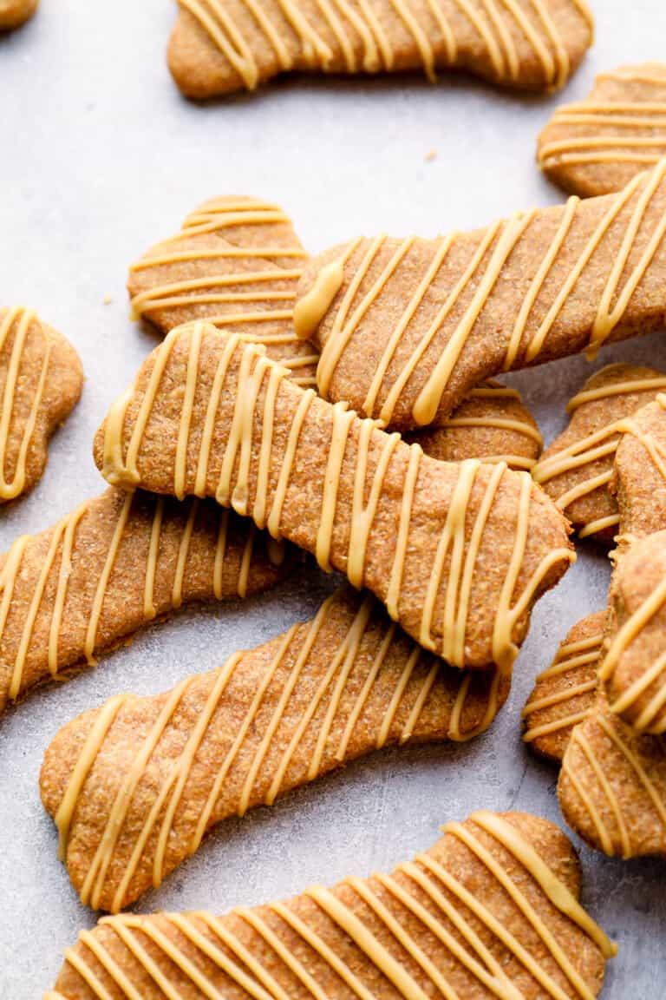

Arlo's Doggie Biscuits

Description
Celebrate your dog's birthday or just "treat" them to something delicious when you make these homemade doggie snacks!
Ingredients
- 2 1/2 c whole wheat flour
- 1 large egg
- 1 c peanut butter
- 1 c water
- 2 T honey
For the frosting
- 2 T peanut butter
- 1 T honey
- 1/3 c cornstarch
- 3-4 T hot water
Instructions
- Preheat oven to 350F degrees
- Combine flour and egg. Add peanut butter, water, and honey
- Roll out dough on floured surface to 1/2 inch thickness and use cookie cutters to create shapes
- Bake for 18-20 minutes, until golden
- To make the frosting, combine the peanut butter and honey in a microwavable bowl and heat for 15 second increments, stirring in between until melted.
- Add water 1 T at a time until desired consistancy. Design biscuits as desired